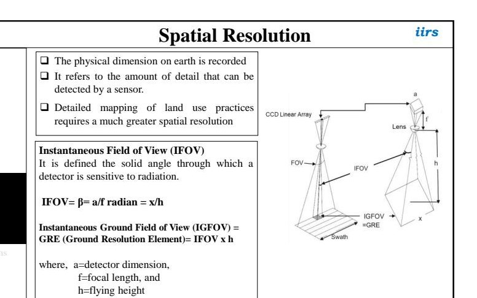

What each resolution actually means
Spatial Resolution
The ground area one pixel covers. "How much detail can I see?" A 1m pixel shows individual buildings; a 1km pixel shows only broad patterns. Defined by IFOV — the solid angle a detector is sensitive to.
Spectral Resolution
The width and number of wavelength bands a sensor detects. "How many colours can I see?" Narrower bands = higher spectral resolution. Panchromatic = 1 broad band; hyperspectral = hundreds of narrow ones.
Radiometric Resolution
Ability to discriminate small energy differences. "How many shades of gray?" Measured in bits — each bit doubles the grey levels. Higher bits = smoother gradients, more shadow detail.
Temporal Resolution
How often a satellite revisits the same area. "How often can I see changes?" Depends on orbit, swath width, and latitude. Weather needs hourly; vegetation monitoring can use weeks.
Spatial resolution is defined by the Instantaneous Field of View (IFOV): β = a/f (radians), where a is detector dimension and f is focal length. The Instantaneous Ground Field of View (IGFOV) = IFOV × h, where h is flying height. To get finer spatial resolution: smaller detector, longer focal length, or lower orbit.

Think of IFOV like the beam of a flashlight pointed at the ground from an airplane. A narrower beam (smaller detector, or a zoomed-in lens) lights up a smaller, more detailed patch of ground — that patch is your pixel. Fly higher, and even a narrow beam spreads out to cover more ground, so your pixel gets bigger and blurrier. That's the whole trade-off in one sentence: closer or more zoomed-in = smaller, sharper pixels; farther away = bigger, blurrier pixels.
Interactive Spatial Resolution: "Before & After" Slider
Drag the slider divider horizontally across the same city landscape to see how detail degrades as pixel size increases from 10m (Sentinel-2) to 30m (Landsat) and 250m (MODIS).
Temporal Resolution: Orbit Revisit Calendar Simulator
A satellite cannot be everywhere at once. Select a satellite and click "Animate Month" to see how often its orbital path allows it to photograph the exact same target area on the ground.